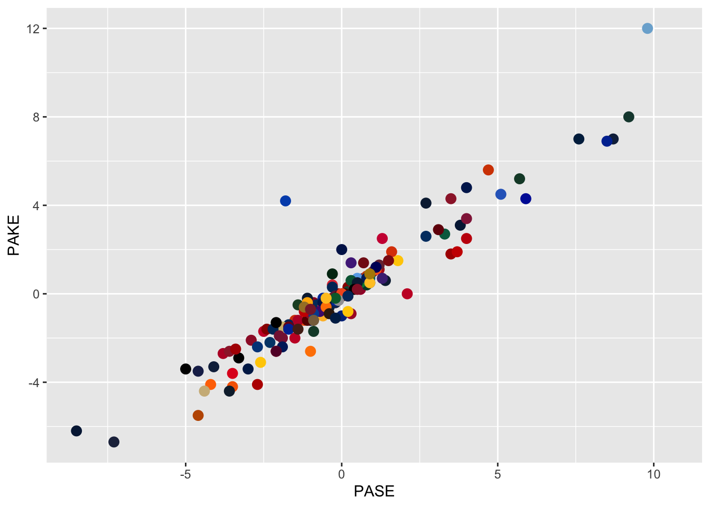
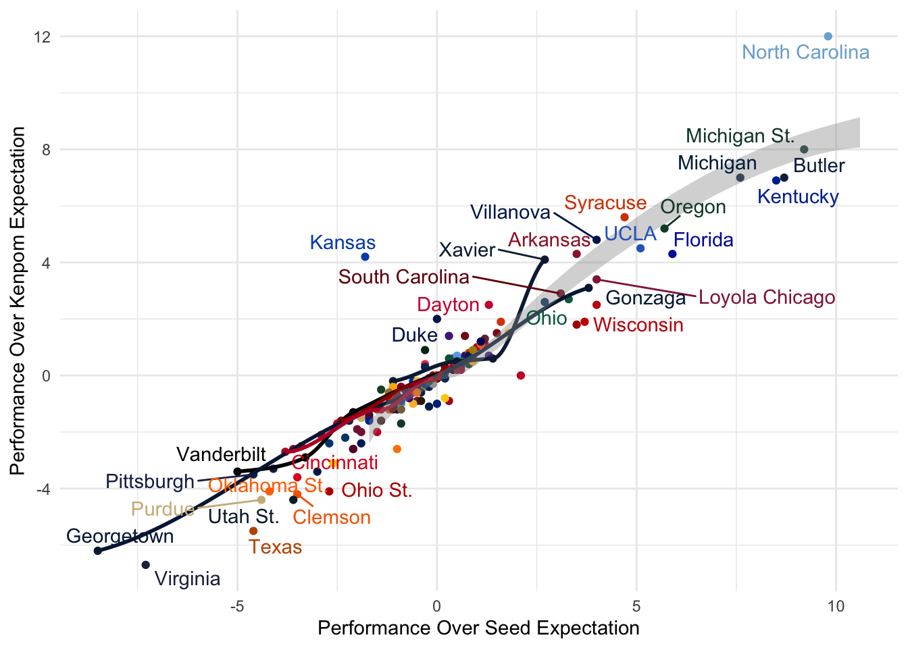
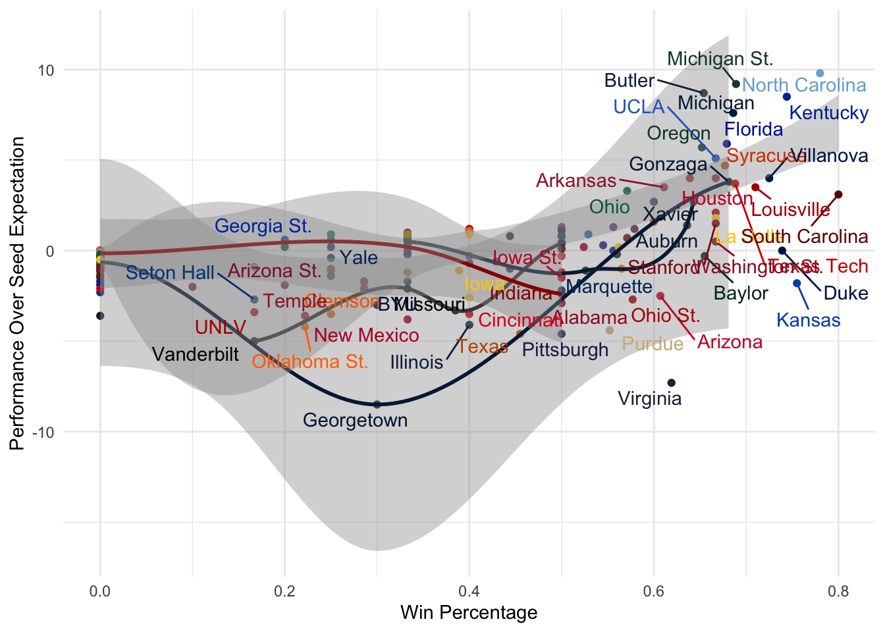
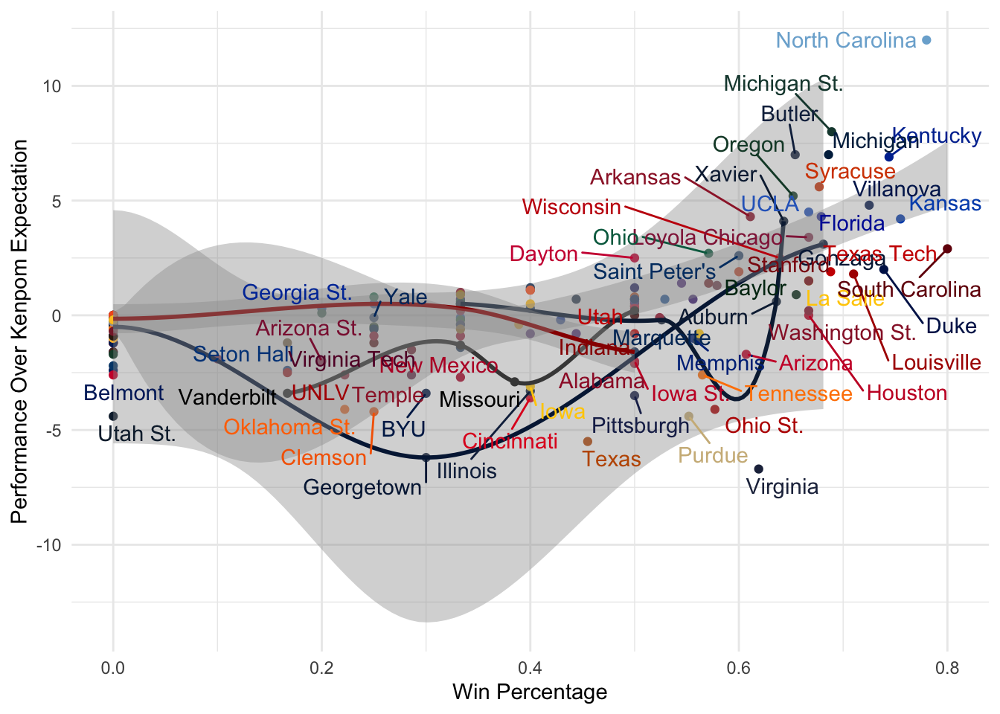
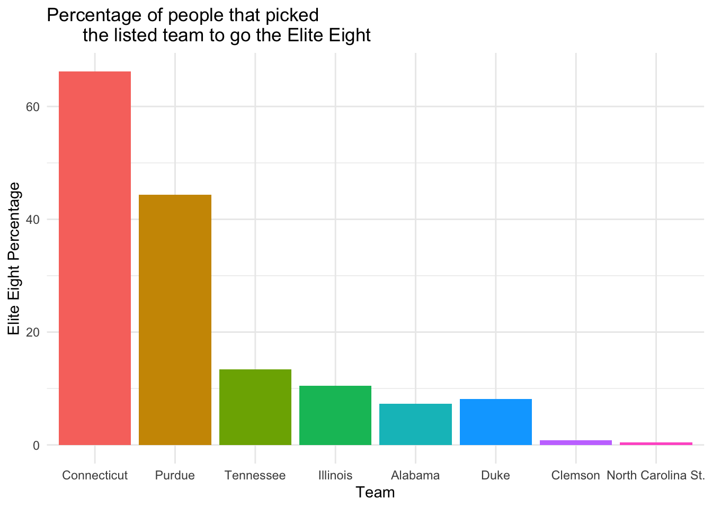
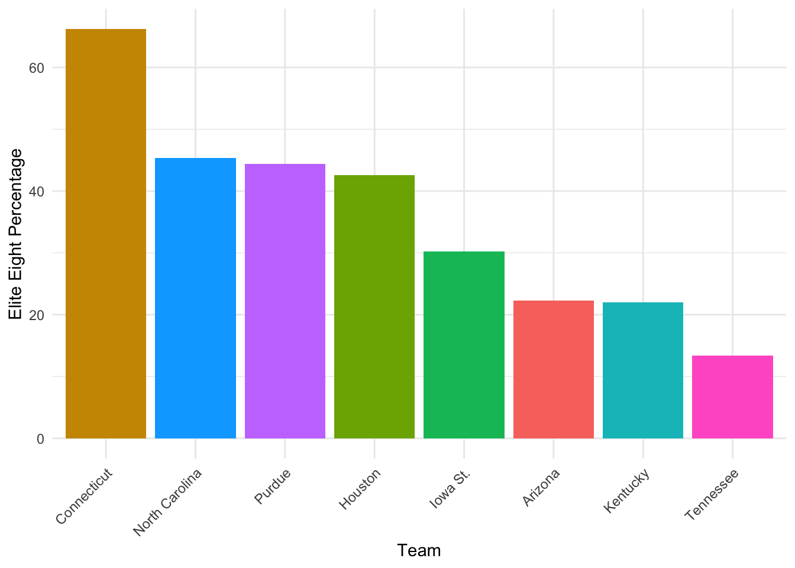
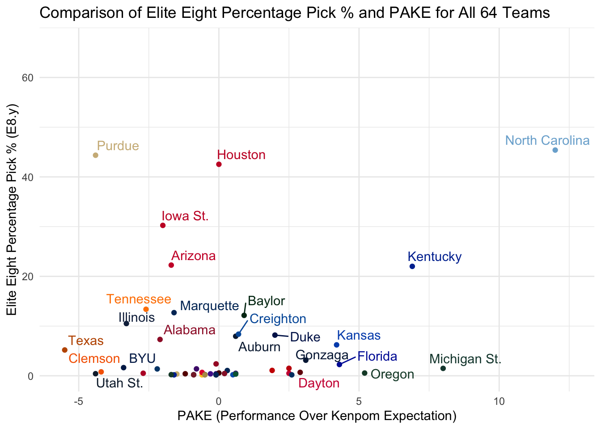
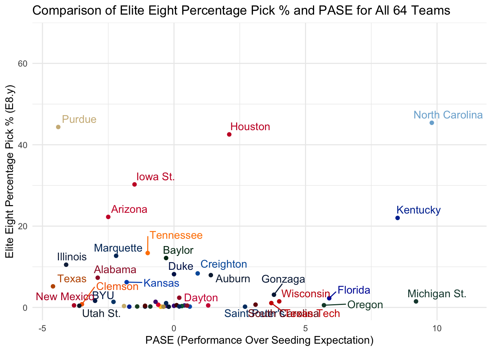
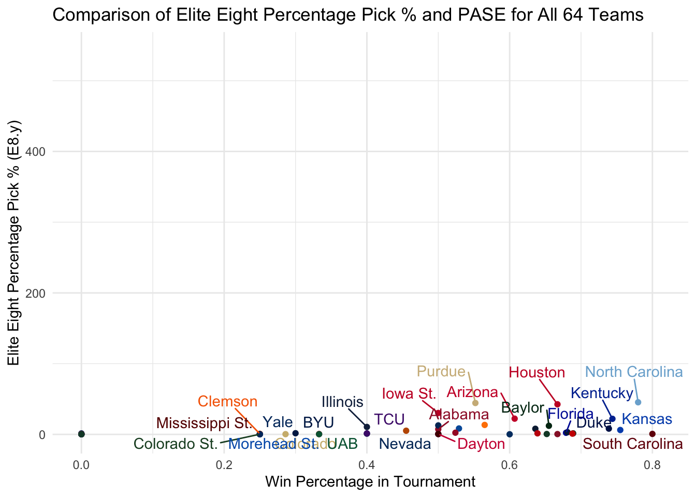
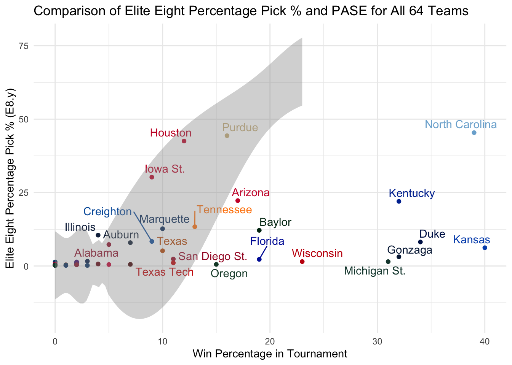

The NCAA March Madness Tournament is an annual single-elimination 64-team (68 if you count the play-in teams) tournament for Division I Men’s collegiate basketball. It is a highly-viewed sporting event that starts in mid-March and bleeds into April, and millions craft brackets in hopes of perfectly predicting the outcome of each game. Increasingly, data scientists and those who favor analysis have pored over metrics and individual / team statistics in attempt to better predict tournament occurrences. But basketball isn’t played on a spreadsheet — while bracket predictions have improved over the years, the 20initesimally improbable “perfect bracket” has yet to be achieved. The efforts of this analysis are not to predict next year’s March Madness winners and losers, but rather to reflect on past results and predictions in the hope of answering some questions.
Is there a correlation between advanced statistical metrics (PAKE, PASE)? Is PAKE or PASE a better predictor of tournament success? How good is the public at predicting outcomes? What metric do people rely on most for choosing who wins?
There are two data sets in this analysis. The first, team-results.csv, includes 20ormation about every team that has qualified for March Madness in the past. The second, public-picks.csv, includes 20ormation about which teams were picked to go to what rounds, and in what quantity.
Importing Data
library(tidyverse)
── Attaching core tidyverse packages ──────────────────────── tidyverse 2.0.0 ──
✔ dplyr 1.1.4 ✔ readr 2.1.5
✔ forcats 1.0.0 ✔ stringr 1.5.1
✔ ggplot2 3.5.1 ✔ tibble 3.2.1
✔ lubridate 1.9.3 ✔ tidyr 1.3.1
✔ purrr 1.0.2
── Conflicts ────────────────────────────────────────── tidyverse_conflicts() ──
✖ dplyr::filter() masks stats::filter()
✖ dplyr::lag() masks stats::lag()
ℹ Use the conflicted package (<http://conflicted.r-lib.org/>) to force all conflicts to become errors
Using GitHub PAT from the git credential store.
Skipping install of 'ncaahoopR' from a github remote, the SHA1 (351b174b) has not changed since last install.
Use `force = TRUE` to force installation
Warning: Removed 40 rows containing missing values or values outside the scale range
(`geom_point()`).

That’s a lot more helpful if you can recognize Carolina Blue or MSU’s green, but it would be more helpful with the team’s names.
team_results_colors |>ggplot(mapping =aes(PASE, PAKE, color = primary_color,label=TEAM)) +geom_point(na.rm=TRUE) +geom_smooth() +geom_text_repel(max.overlaps =20) +xlab("Performance Over Seed Expectation") +ylab("Performance Over Kenpom Expectation") +scale_color_identity() +theme_minimal()

Correlation with team success
team_results_colors |>ggplot(mapping =aes(WINPERCENT, PASE, color = primary_color,label=TEAM,na.rm=TRUE)) +geom_point() +geom_smooth() +geom_text_repel(max.overlaps =20) +xlab("Win Percentage") +ylab("Performance Over Seed Expectation") +scale_color_identity() +theme_minimal()

team_results_colors |>ggplot(mapping =aes(WINPERCENT, PAKE, color = primary_color,label=TEAM,na.rm=TRUE)) +geom_point() +geom_smooth() +geom_text_repel(max.overlaps =20) +xlab("Win Percentage") +ylab("Performance Over Kenpom Expectation") +scale_color_identity() +theme_minimal()

It seems that while neither PASE nor PAKE correlates significantly more than the other to winning percentage, both a higher PAKE and PASE is related to a higher winning percentage.
This is data for this past March Madness tournament, and what teams were picked at which percentages to advance to which rounds.
ncaapicks2024 <-full_join(team_results_colors,public_picks,by="TEAM")#Remove teams that were not in the tourney this yearncaapicks2024 <- ncaapicks2024[!is.na(ncaapicks2024$TEAMNO),]ncaapicks2024
Let’s look how good the public is at predicting outcomes, specifically the elite eight. This year, the Elite Eight teams were Connecticut, Purdue, Tennessee, Illinois, Alabama, Duke, Clemson and NC State.
elite_eight <- ncaapicks2024 |>filter(TEAM %in%c("Connecticut","Purdue","Tennessee","Illinois","Alabama", "Duke","Clemson","North Carolina St.")) |>mutate(TEAM =factor(TEAM, levels =c("Connecticut","Purdue","Tennessee","Illinois","Alabama", "Duke","Clemson","North Carolina St.")))elite_eight$E8.y <-as.numeric(sub("%", "", elite_eight$E8.y))ggplot(elite_eight, aes(x = TEAM, y = E8.y, fill = TEAM)) +geom_bar(stat ="identity", position ="dodge") +labs(x ="Team", y ="Elite Eight Percentage", title ="Percentage of people that picked the listed team to go the Elite Eight") +theme_minimal() +theme(legend.position ="none")

And here’s the teams that were picked over them.
ncaapicks2024$E8.y <-as.numeric(sub("%", "", ncaapicks2024$E8.y))top_20_teams <- ncaapicks2024 %>%arrange(desc(E8.y)) %>%head(8) ggplot(top_20_teams, aes(x =reorder(TEAM, -E8.y), y = E8.y, fill = TEAM)) +geom_bar(stat ="identity", position ="dodge") +labs(x ="Team", y ="Elite Eight Percentage") +theme_minimal() +theme(axis.text.x =element_text(angle =45, hjust =1)) +guides(fill =FALSE)
Warning: The `<scale>` argument of `guides()` cannot be `FALSE`. Use "none" instead as
of ggplot2 3.3.4.

So the public was 3/8 — but what metrics determined their choices?
ggplot(ncaapicks2024, aes(x = PAKE, y = E8.y, label = TEAM, color = primary_color)) +geom_point() +geom_text_repel(nudge_x =0.5, nudge_y =0.5, max.overlaps =20) +labs(x ="PAKE (Performance Over Kenpom Expectation)", y ="Elite Eight Percentage Pick % (E8.y)",title ="Comparison of Elite Eight Percentage Pick % and PAKE for All 64 Teams") +scale_color_identity() +theme_minimal()

And for PASE…
ggplot(ncaapicks2024, aes(x = PASE, y = E8.y, label = TEAM, color = primary_color)) +geom_point() +geom_text_repel(nudge_x =0.5, nudge_y =0.5, max.overlaps =20) +labs(x ="PASE (Performance Over Seeding Expectation)", y ="Elite Eight Percentage Pick % (E8.y)",title ="Comparison of Elite Eight Percentage Pick % and PASE for All 64 Teams") +scale_color_identity() +theme_minimal()

Looks like neither metric was used too much for predicting outcomes, what about win percentage and past tournament wins?
ggplot(ncaapicks2024, aes(x = WINPERCENT, y = E8.y, label = TEAM, color = primary_color)) +geom_point() +geom_text_repel(nudge_x =0.01, nudge_y =0.5, max.overlaps =20) +geom_smooth() +labs(x ="Win Percentage in Tournament", y ="Elite Eight Percentage Pick % (E8.y)",title ="Comparison of Elite Eight Percentage Pick % and PASE for All 64 Teams") +scale_color_identity() +theme_minimal()

ggplot(ncaapicks2024, aes(x = W, y = E8.y, label = TEAM, color = primary_color)) +geom_point() +geom_text_repel(nudge_x =0.01, nudge_y =0.5, max.overlaps =20) +geom_smooth() +labs(x ="Win Percentage in Tournament", y ="Elite Eight Percentage Pick % (E8.y)",title ="Comparison of Elite Eight Percentage Pick % and PASE for All 64 Teams") +scale_color_identity() +theme_minimal()

Looks like the simpler metric of tournament win percentage was the most helpful in predicting tournament outcomes, at least for last year!